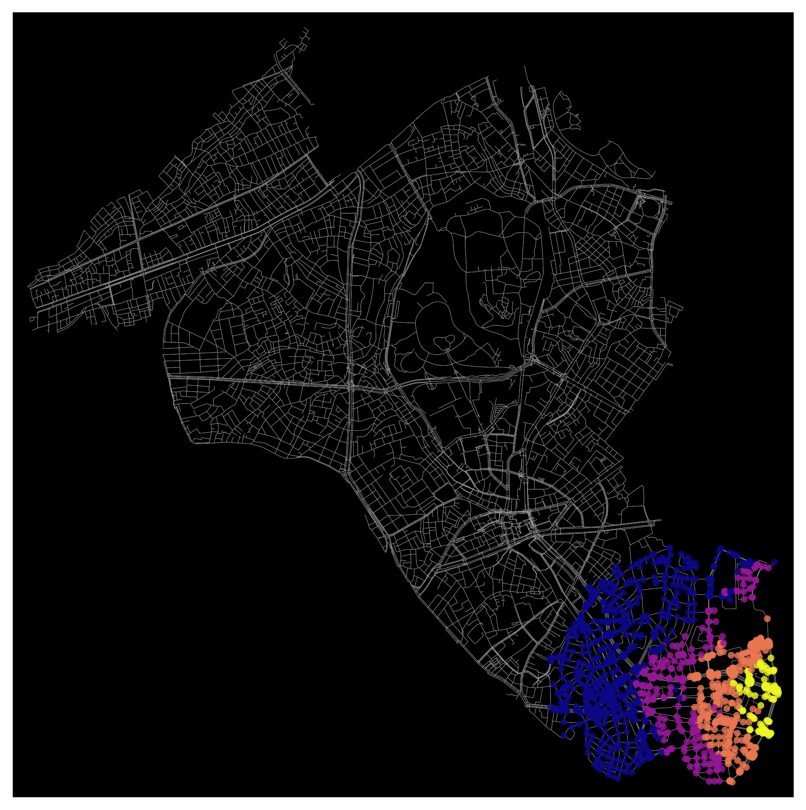

The objective of this process was to generate isochrone maps for multiple school locations in Shibuya, Tokyo, Japan, representing areas reachable within specific walking times. Using OSMnx, the study area was configured, the walking network was acquired, and the location data was cleaned to focus on high schools, middle schools, and primary schools. A walking speed of 4.5 km/h was set, travel times were calculated, and isochrones for 5, 10, 15, and 25-minute intervals were created.
The maps illustrate isochrone maps for multiple school locations in Shibuya, Tokyo, Japan, highlighting areas accessible within specific walking times. The maps reveal that accessibility zones are concentrated in the southeastern part of Shibuya, indicating that schools are primarily located in this region. The color gradient from dark blue to light yellow represents travel times, with darker colors indicating longer travel times (up to 25 minutes) and lighter colors indicating shorter travel times (5 minutes).
The distribution of schools is observed to be clustered in southeastern neighborhood, providing multiple schooling options within walking distance in the southeastern part of Shibuya. The smooth and consistent change in accessibility zones suggests effective urban planning, supporting easy access to schools within reasonable walking distances. However, large areas in the northern and western parts of Shibuya lack accessibility zones, indicating potential areas for further investigation to ensure equitable access to educational facilities.
The well-defined isochrone boundaries indicate high-quality pedestrian infrastructure in the analyzed areas, suggesting that the southeastern part of Shibuya is well-served by educational facilities. Despite its limitations, this analysis provides valuable insights into the current state of school accessibility in Shibuya.